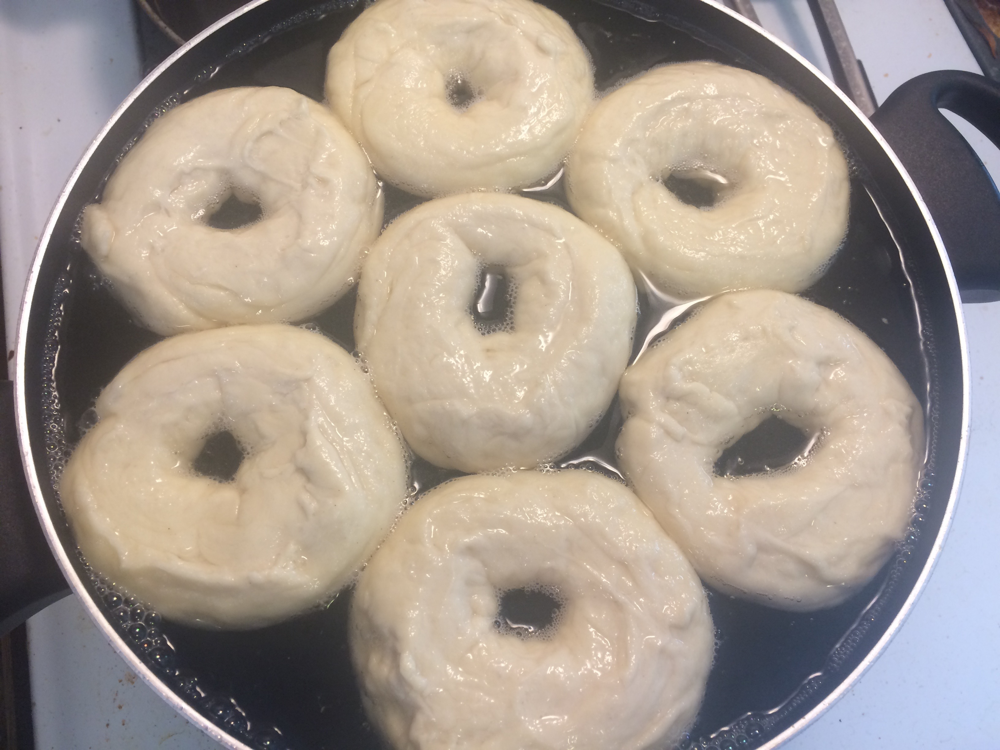
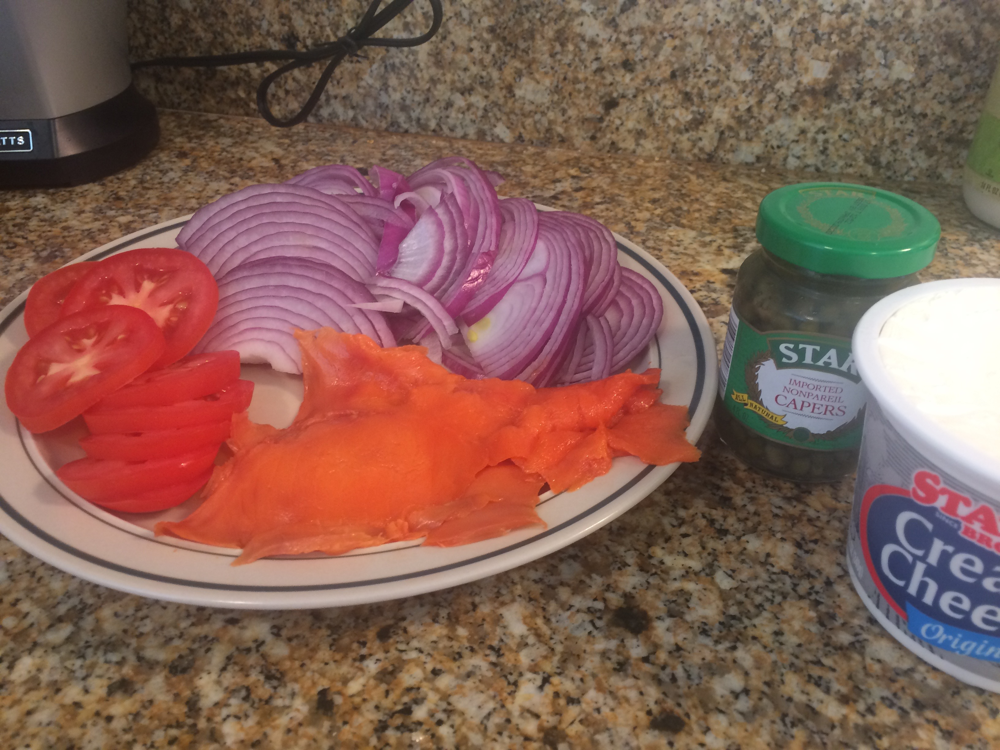
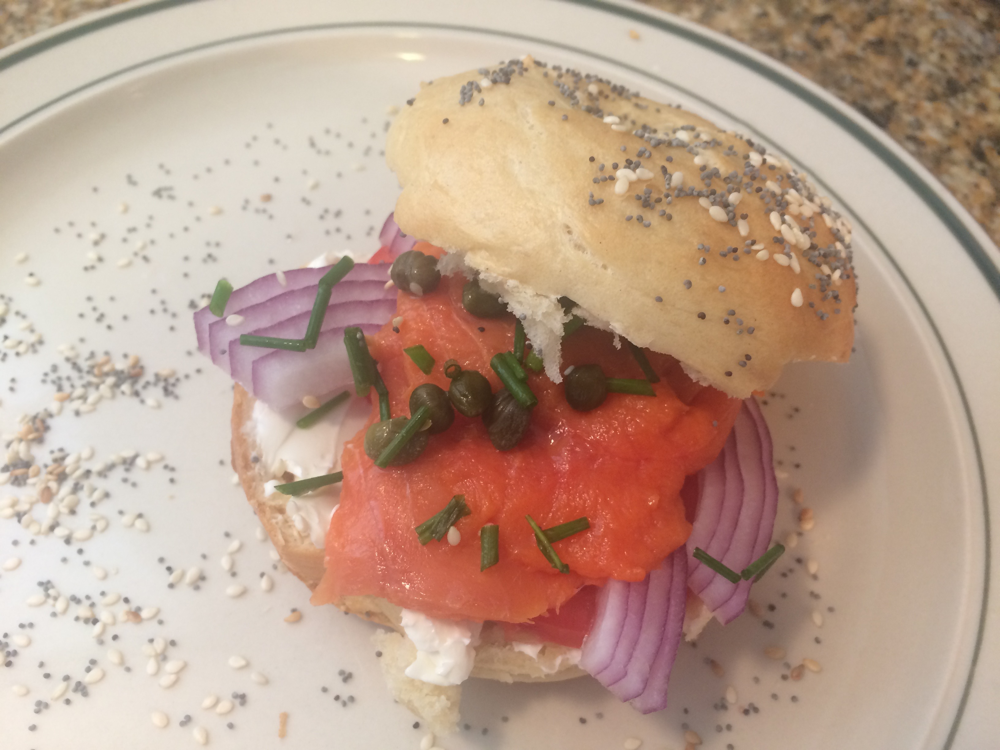

5 cups bread flour
4 tbsp sugar
1 tsp salt (can use a little more depending on preference)
6 tbsp liquid honey (will just go in water)
1 tbsp syrup
3 tbsp canola oil
1.5 tbsp beaten egg
At least 1 oz of poppy seeds and sesame seeds each, but more is better
1/4 oz dry yeast
For Lox Sandwich
Nova lox
Tomato, sliced
Capers
Red onion, thinly sliced
Cream cheese
Chopped chives
Horseradish sauce (optional)
Makes a dozen bagels Total Time: 90 minutes
Mix canola oil, sugar, yeast, egg and syrup together with 1.5 cups of warm water and stir for three minutes. Then add in salt and gently stir in the flour little by little until you have added about four cups. Begin kneading the dough and add in the rest of the flour as needed. Continue to knead for at least 10 minutes, then place underneath bowl and let rise for 15 minutes.
Break or cut the dough into twelve equal pieces. If you want slightly larger bagels breaking the dough into ten or nine pieces works great too. Roll each piece out into a foot long roll of constant thickness and then connect it into bagel shape, making sure to leave enough space for the hole as it will shrink as the bagels expand. If the ends don't stick well together you can use a bit of water to smooth them out.
The way the bagels look now is very similar to how they will come out, so correct any unevenness and smooth them out as best as possible. Then let them rise for another 25 minutes. Preheat the oven to 425 degrees Fahrenheit. Fill a very large pot with water up to two inches from the top. Stir in the honey and bring to a boil. Drop in six of the bagels immediately one after the other (or do different batch sizes depending on the size of the pot). After 45 seconds quickly turn the bagels over, then boil them for another 45 seconds and remove onto a kitchen cloth to dry. Do not overcook. Repeat with the second batch. Line two baking trays with parchment paper and place the bagels onto them after they have dried for a few minutes. Cover the bagels with the sesame seeds and poppy seeds as you wish. It helps to pat the seeds into the bagels slightly as many of them will fall right off. Turn them over and add seeds to other side as well. Then bake for 22 minutes. You can turn them over after they are halfway done to bake them even more evenly but they come out very well without this step.


